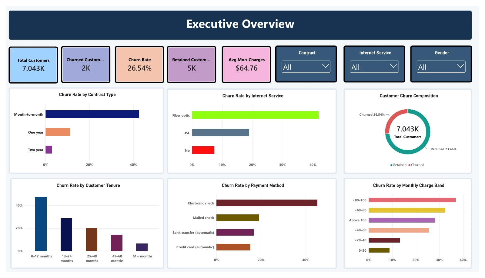
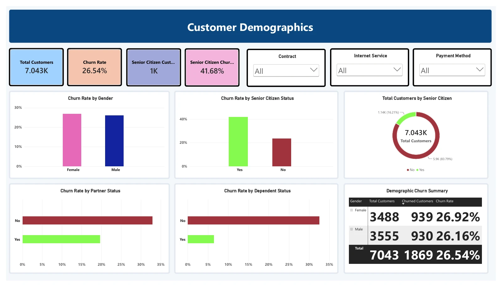
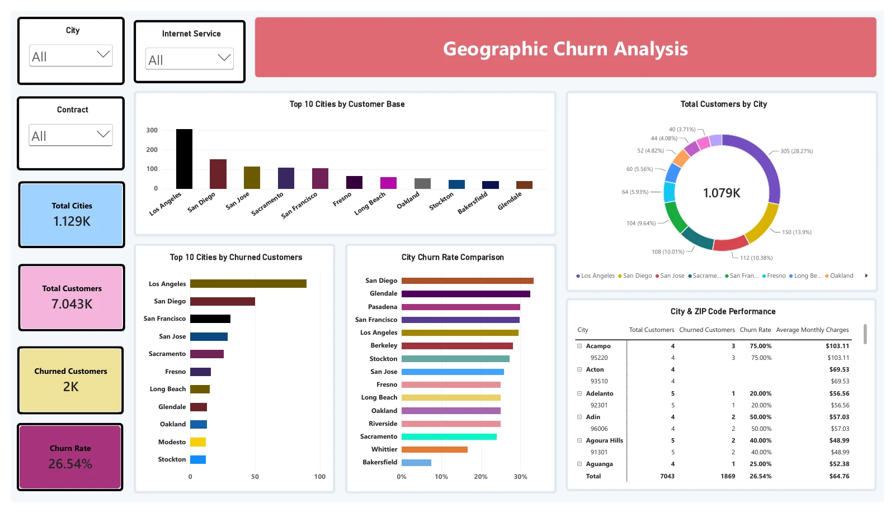
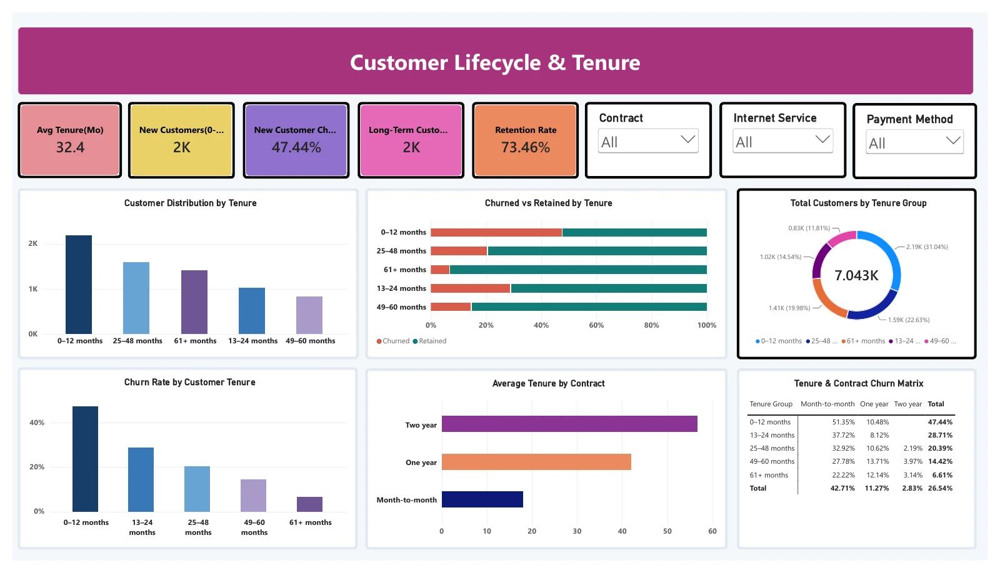
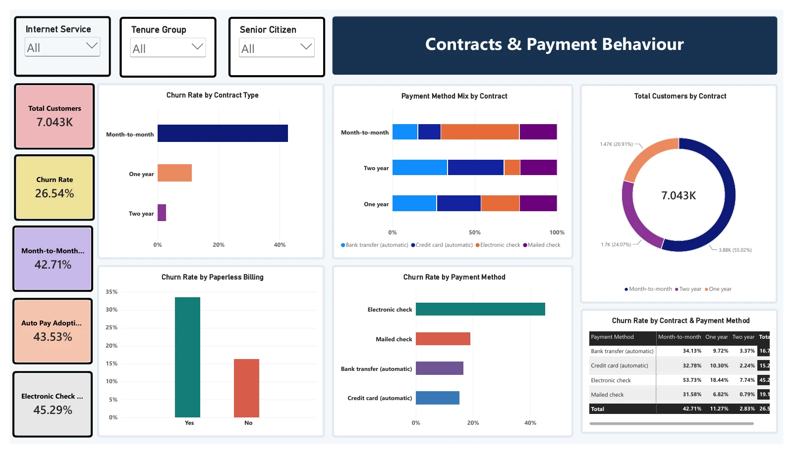
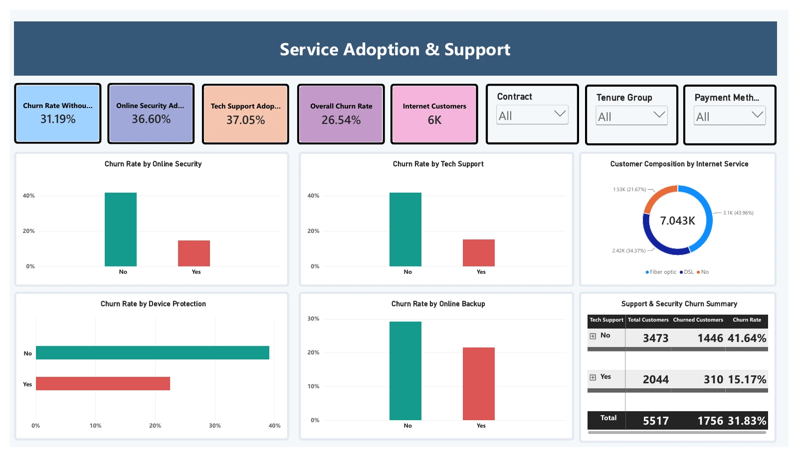
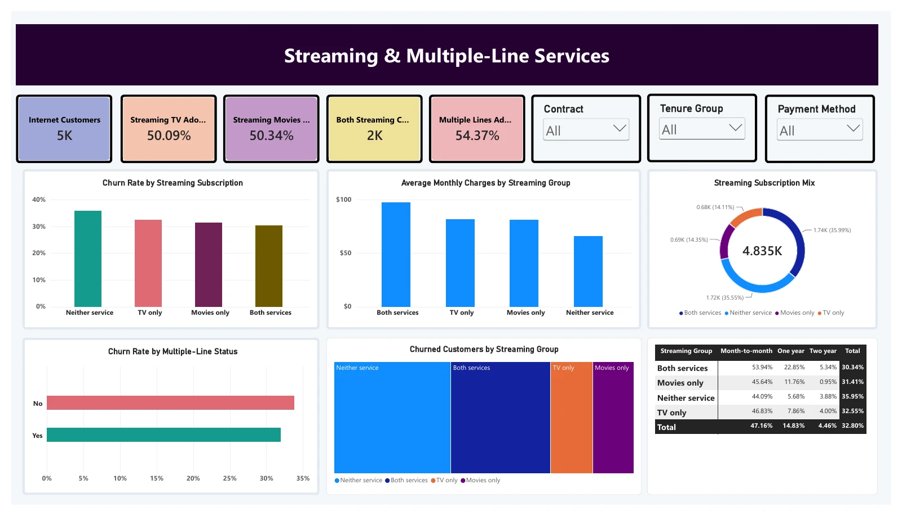
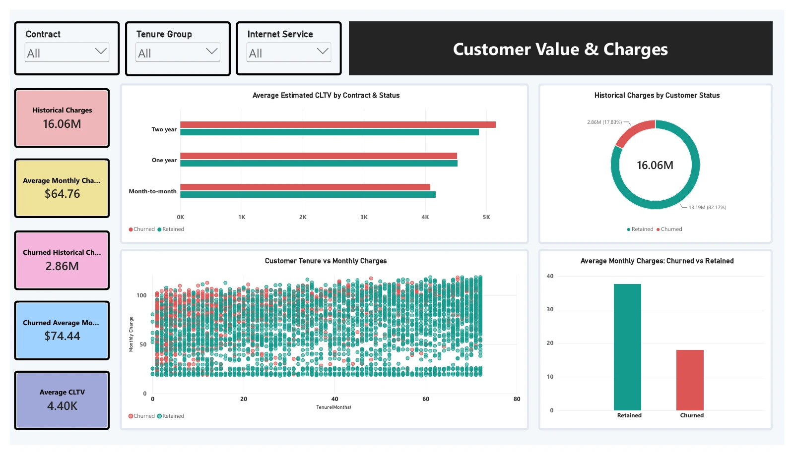
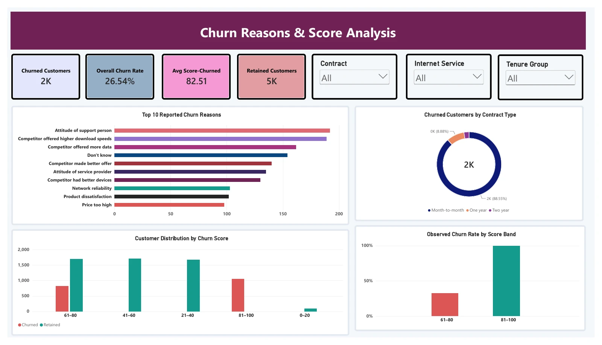
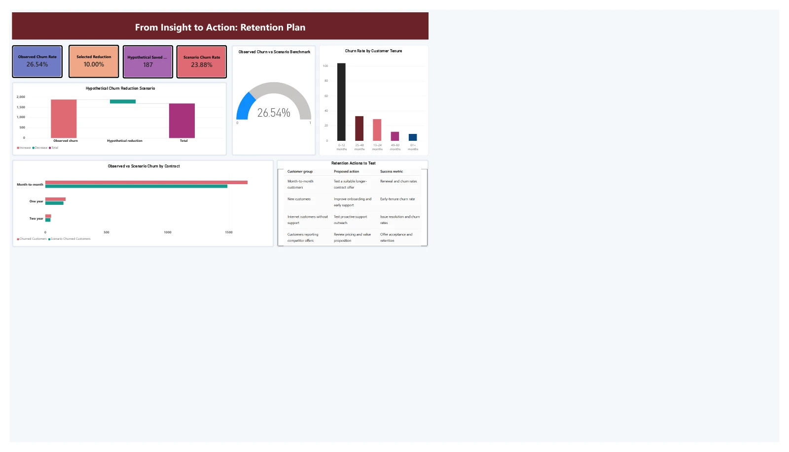

TELECOM ANALYTICS / POWER BICustomer churn
Customer churn
& retention
Explore who left, where churn was highest and which customers a retention pilot could reach first.
26.54%Overall churn
Churned 26.54% Retained 73.46%
WRITTEN ANALYSIS
Project Report
Read Shoaib’s 16-page report covering the project objectives, dashboard findings and recommended retention actions.
Where churn concentrates
Churn by contract
Share of customers who left within each contract type.
0%25%50%
of first-year customers on monthly contracts left.
Test a setup check and first-bill walkthrough for this group. Compare 90-day churn with customers receiving usual service.
Dashboard explorer
Open a section to read its findings and explore the original charts.
Executive overview
7,043 customers
Of the full customer base, 1,869 left and 5,174 stayed. The average monthly charge was $64.76.


Customer demographics
41.68% senior churn
Senior customers accounted for 16.21% of the base. Churn was similar for women (26.92%) and men (26.16%).


Geography
1,129 cities
Los Angeles had 305 customers and the most departures. Acampo’s 75% churn represents three departures from just four accounts.


Customer tenure
51.35% first-year churn on monthly contracts
Across all contracts, churn was 47.44% in the first 12 months and 6.61% at 61 months or more.


Contracts & payments
45.29% electronic-check churn
Among month-to-month customers, churn reached 53.73% for electronic checks and 34.13% for automatic bank transfers.


Services & support
26.47-point support gap
Among 5,517 internet customers, churn was 41.64% without technical support and 15.17% with support.


Streaming & multiple lines
4,835 customers in the streaming mix
Across contracts, churn was 30.34% with both streaming services and 35.95% with neither. Among monthly contracts, those rates were 53.94% and 44.09%.


Customer value
$2.86M in historical charges from customers who left
These accounts contributed 17.83% of the $16.06M billed historically. Their monthly charge averaged $74.44 against $64.76 overall.


Churn reasons & scores
Support attitude ranked first
Customers also cited competitors offering higher speeds or more data. The average churn score among departing customers was 82.51.


Retention plan
187 potential saves
At a hypothetical 10% relative reduction in departures, 1,682 customers would leave and the churn rate would fall to 23.88%.


What if fewer customers left?
Adjust the assumed reduction in departures. Each scenario uses the same base of 7,043 customers.
0%100%
Hypothetical saves187
Remaining departures1,682
Scenario churn rate23.88%